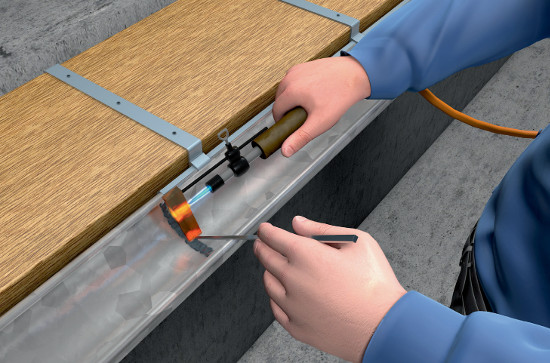

Gefährdungen
- Es kann zu Bränden und
Explosionen, zu Verbrennungen
der Haut und zu Gesund heitsschäden durch Lot- und Flussmitteldämpfe
kommen.
Allgemeines
- Lötgeräte vor Arbeitsaufnahme auf ordnungsgemäßen Zustand überprüfen, insbesondere
- bei Elektro-Lötgeräten auf beschädigte Leitungen und Leitungseinführung,
- bei flüssiggasbetriebenen Lötgeräten auf Schlauchanschluss und Ventildichtheit achten.
- Je nach Arbeitsaufgabe und -umfang für ausreichende Lüftung sorgen und Brandschutz sicherstellen.
Schutzmaßnahmen
- Bei Lötarbeiten in Bereichen mit Brand- und Explosionsgefahr muss eine Schweißerlaubnis vorliegen.
- Alle brennbaren Teile aus der gefährdeten Umgebung entfernen.
- Sicherheitsmaßnahmen zur Verhinderung einer Brandentstehung in der Schweißerlaubnis festlegen, insbesondere
- nicht entfernbare brennbare Teile abdecken,
- Öffnungen abdichten.
- Während des Weichlötens
geeignete Feuerlöschmittel, z. B. Pulverlöscher, bereitstellen.
- Nach Beendigung der Arbeiten wiederholte Kontrolle der Arbeitsstelle auf Brandnester (Brandwache).
- Sichere, nicht brennbare
Unterlage verwenden. Arbeitsplatz von leicht brennbaren Stoffen freihalten.
- Weichlote nicht überhitzen.
- Auch für kurzzeitige Arbeitsunterbrechungen sichere Geräteablagen benutzen.
- Beim Flammlöten Schutzbrille tragen.
07/2015